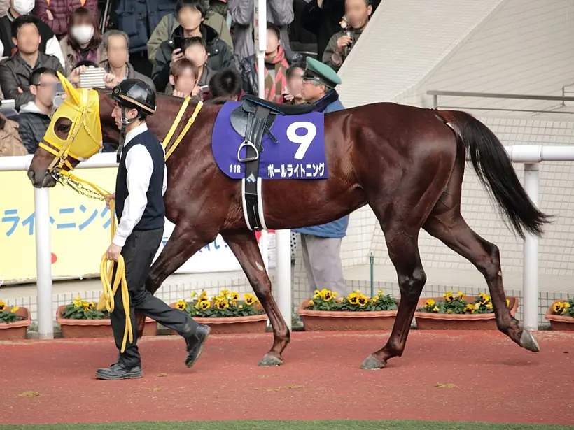
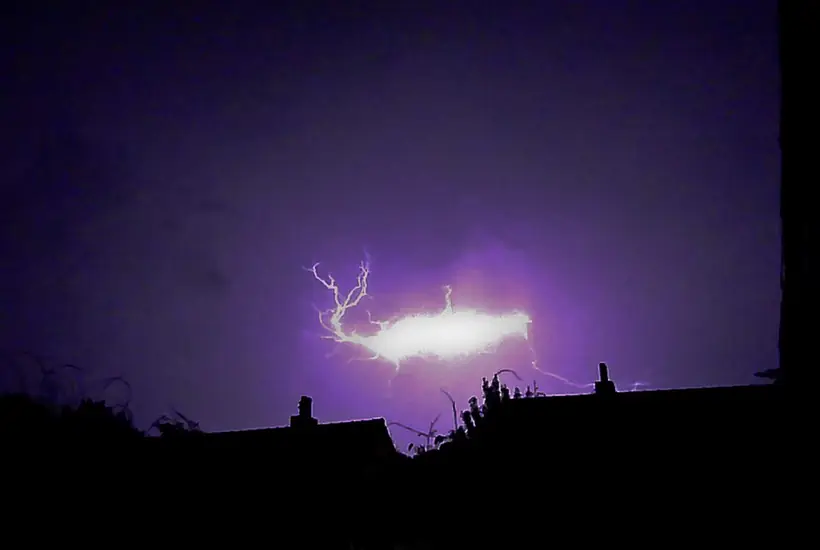

Most of this archive is about claims that failed. This dossier is the opposite: things that happened, were investigated properly, and are still not fully settled. They are the best argument for keeping an open mind — and for noticing that “we don’t know yet” is a normal scientific state, not a supernatural one.
Maps, diagrams and images




Tunguska, 1908
At about 7:15 a.m. on 30 June 1908, an object entered the atmosphere over the Siberian taiga and exploded in the air. Eyewitnesses hundreds of kilometres away saw a fireball and felt the blast; seismic stations recorded it; the night skies over Europe were bright enough to read by, because dust had been thrown into the stratosphere.
The first scientific expedition did not arrive until 1927 — the region is that remote. It found a butterfly-shaped area of flattened forest covering about 830 square miles, with millions of trees knocked over radially and no impact crater.
NASA’s 2018 Tunguska workshop, using modern airburst models including ones built for the 2013 Chelyabinsk event, converged on a solution: an energy release of 10–20 megatons at a height of about 10 km, from a stony asteroid roughly 50–80 m across that was vaporised before it reached the ground. Recurrence: an object of that size every few thousand years.
That is close to a complete explanation. What remains open is the fine detail — the exact orbit, the fragmentation sequence, and whether any solid remnant survived.
Dyatlov Pass, 1959
Nine experienced Soviet mountaineers died in the northern Urals in February 1959. Their tent was found cut open from the inside; they had fled into −30 °C darkness partly clothed; several had severe internal injuries without matching external wounds; one was missing her tongue and eyes. The Soviet investigation closed with “a compelling natural force”.
In 2021, a team publishing in Communications Earth & Environment built a physical model of a slab avalanche released by wind-loaded snow above the tent. Their key insight: the hikers had cut a ledge into the slope to pitch the tent, and katabatic winds then deposited snow on the slab above it. Their simulation gives release 7.5 to 13.5 hours after the cut — matching the forensic time of death — and shows that even a small slab can cause the observed chest and skull injuries.
It is the best-supported explanation and not a proof. The injuries remain unusual, and the case is still argued.
The Voynich manuscript
A 240-page codex, illustrated with plants that match no known species, astronomical diagrams, and bathing figures, written in an alphabet that appears nowhere else. It has resisted every cryptographer who has tried it, including some very good ones.
In 2009 the parchment was radiocarbon-dated by the University of Arizona: 1404–1438, with 95% confidence. That rules out the wilder modern-forgery theories and puts it in the early Renaissance. The text itself may still be later than the parchment.
Three families of explanation compete: a genuine natural language or cipher; an invented script encoding a real language; and meaningless text produced to look valuable (the “hoax” hypothesis). No proposal has achieved general acceptance — which makes this the cleanest unsolved puzzle in the archive.
The Hessdalen lights
Since at least the 19th century, residents of a valley in central Norway have reported unexplained lights: bright, hovering, sometimes lasting minutes. It is one of the few cases where the phenomenon was studied with permanent instrumentation — cameras, spectrometers and radar, run by Italian and Norwegian teams from 1998, partly by people who had worked on SETI.
The 2010 Acta Astronautica paper concluded that the data indicate “a combustion process driven by an unknown power source” — a real, measured, unidentified phenomenon. Later work has proposed plasma and geological batteries; one 2021 paper even suggested wormholes, which shows how far the speculation runs when the data are thin. It remains genuinely open, and genuinely small.
Spontaneous human combustion
The classic case: a body reduced to ash, the room barely scorched, furniture intact. Victorian explanations invoked alcohol-soaked bodies, which fails on chemistry.
The modern forensic answer is the wick effect: clothing soaks up melted body fat and acts as a candle wick, producing a slow, localised, very hot smoulder that can consume a body while leaving surroundings intact. Experiments reproduce the pattern. The remaining mystery is only the ignition source — a dropped cigarette, a spark — which the fire itself destroys.
That is not “solved by scepticism”. It is solved by experiment, and it is a good model for how the rest of this archive should be read.
Every case on this page has the same anatomy: a real event, documented by professionals, with a leading hypothesis that explains most of the data and a residue that does not quite fit. The residue is where the mystery lives — and it is almost always smaller than the legend says.
Compare that with the claims elsewhere in this archive, which have no measurements to argue about at all.
Sources for this page
- NASA, “115 Years Ago: The Tunguska Asteroid Impact Event”nasa.gov
- NASA/TM–2018–220174, Tunguska Workshop (PDF) — 10–20 Mt at ~10 kmntrs.nasa.gov
- Borovicka et al. (2021), Communications Earth & Environment — Dyatlov slab avalanchenature.com
- ETH Zurich, Geomechanics — the Dyatlov project pagegeomechanics.ethz.ch
- Voynich.nu, “The radio-carbon dating of the Voynich MS”voynich.nu
- Teodorani, Acta Astronautica (2010), “Investigation & analysis of transient luminous phenomena in the low atmosphere of Hessdalen valley”sciencedirect.com
- Journal of Scientific Exploration (2021), “Are Hessdalen Lights a Reality, an Illusion, or a Mix of the Two?” (PDF)journalofscientificexploration.org
- Britannica, “Is spontaneous human combustion real?” — the wick effectbritannica.com
Open resources on this topic
- BookAsapSCIENCE: Answers to the World's Weirdest Questions, Most Persistent Rumors, and Unexplained Phenomena (Internet Archive, free to read)
- BookWeird Georgia : close encounters, strange creatures, and unexplained phenomena — Miles, Jim · 2000 (Internet Archive, free to read)
- BookTrue ghost stories II : frightening accounts of haunted houses, paranormal mysteries, and unexplained phenomen — Hart, Selinda, author · 2016 (Internet Archive, free to read)
- PapersOpen-access articles: DOAJ · PubMed Central · Internet Archive Scholar
- BooksPublic-domain and borrowable copies: Open Library · Project Gutenberg · Google Books
More images
Cite this page
Momin, S. (2026). Unexplained Phenomena. The Larger World Archive. https://drsamonline.github.io/LARGE_GLOBE/unexplained.htmlMomin, Sohil. “Unexplained Phenomena.” The Larger World Archive, 2026, https://drsamonline.github.io/LARGE_GLOBE/unexplained.html.Momin, Sohil. “Unexplained Phenomena.” The Larger World Archive, 2026. https://drsamonline.github.io/LARGE_GLOBE/unexplained.html.@misc{unexplained2026unexplained,
author = {Momin, Sohil},
title = {Unexplained Phenomena},
year = {2026},
howpublished = {The Larger World Archive},
url = {https://drsamonline.github.io/LARGE_GLOBE/unexplained.html},
note = {Last reviewed 20 November 2026}
}Last reviewed 20 November 2026 · Corrections policy · this page is not peer reviewed